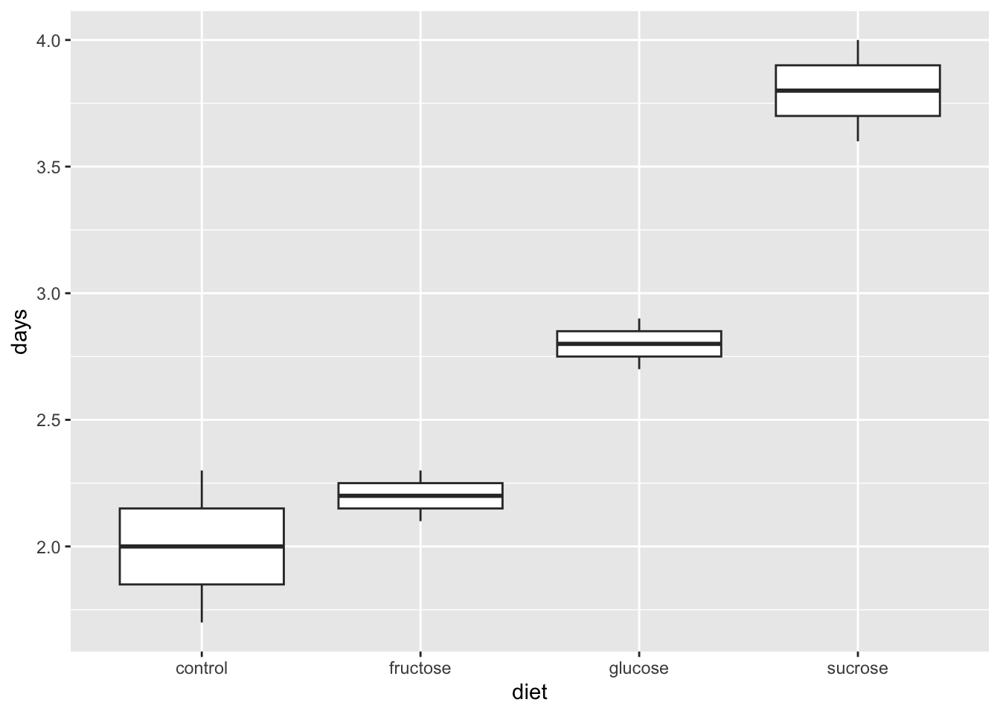
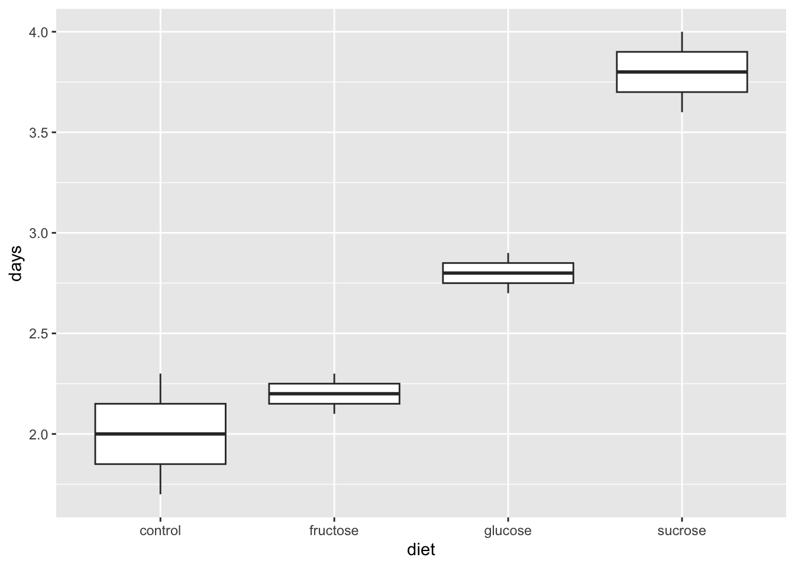
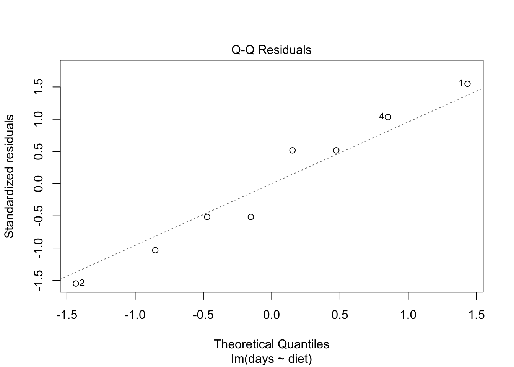
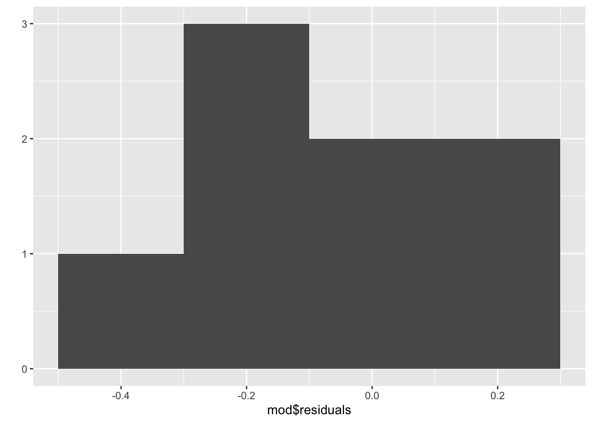

#Note that boxplots are a bit silly in this example because n is only 2.
qplot(x = diet, y = days, data = leaf, geom = "boxplot")Warning: `qplot()` was deprecated in ggplot2 3.4.0.
Model:
\[{y}_{ij}=\mu+{\alpha}_{i}+{e}_{ij}\]
Null hypothesis:
\[{H}_{0}:{\alpha}_{1}={\alpha}_{2}=...={\alpha}_{a}=0\]
ANOVA Source table:
| Source | SS | df | MS | F |
|---|---|---|---|---|
| Treatment | \(n\sum_{i=1}^{a}(\bar{y}_{i.}-\bar{y}_{..})^{2}\) | \(a-1\) | \(\frac{{SS}_{Treatments}}{{df}_{Treatments}}\) | \(\frac{{MS}_{Treatments}}{{MS}_{E}}\) |
| Error | \(\sum_{i=1}^{a}\sum_{j=1}^{n}({y}_{ij}-\bar{y}_{i.})^{2}\) | \(N-a\) | \(\frac{{SS}_{E}}{{df}_{E}}\) |
Three steps:
#Note that boxplots are a bit silly in this example because n is only 2.
qplot(x = diet, y = days, data = leaf, geom = "boxplot")Warning: `qplot()` was deprecated in ggplot2 3.4.0.
leaf %>%
group_by(diet) %>%
summarize(n = n(),
m = mean(days),
sd = sd(days))# A tibble: 4 × 4
diet n m sd
<chr> <int> <dbl> <dbl>
1 control 2 2 0.424
2 fructose 2 2.2 0.141
3 glucose 2 2.8 0.141
4 sucrose 2 3.8 0.283mod <- lm(days ~ diet, data = leaf)
anova(mod)Analysis of Variance Table
Response: days
Df Sum Sq Mean Sq F value Pr(>F)
diet 3 3.92 1.3067 17.422 0.009248 **
Residuals 4 0.30 0.0750
---
Signif. codes: 0 '***' 0.001 '**' 0.01 '*' 0.05 '.' 0.1 ' ' 1There are statistically significant differences in leafhopper survival rates across diets, \(F(3, 4) = 17.42\), \(p = .009\).
OR
Diet has a statistically significant effect on leafhopper survival rates, \(F(3, 4) = 17.42\), \(p = .009\).
In groups of three run all three steps (visualize, descriptive stats, and ANOVA) for the two datasets below. Write a sentence about your conclusion from the ANOVA.
Dataset 1: SandwichAnts
BreadAntsDataset 2: Meniscus
MethodDisplacementlibrary(Stat2Data)
data("SandwichAnts")
?SandwichAntsSTOP!!…only under certain conditions can we rely on this inference. There were many assumptions built into:


We assume every observation in a similar condition is affected exactly the same. (Gets the same “true score”).
animals_sim <- animals %>%
mutate(benchmark = mean(calm)) %>%
group_by(animal) %>%
mutate(animal_mean = mean(calm),
aminal_effect = animal_mean - benchmark)We add the effects as we go down the assembly line.
The interaction effect captures the possibility that conditions have non-additive effects, but it is also added to everything else.
calm_sim = benchmark
+ aminal_effect
+ cue_effect
+ interaction_effect
+ student_effectThe piece of code for adding error is not dependent on which condition the observations is in.
+ rnorm(82, 0, 0.79)Takes 82 independent draws from a normal distribution.
+ rnorm(82, 0, 0.79)It’s rnorm(), and not rbinom() or rpois()…
+ rnorm(82, 0, 0.79)The second argument is the mean.
+ rnorm(82, 0, 0.79)C. Constant effects – think about whether it is reasonable.
A. Additive effects – think about whether it is reasonable.
S. Same standard deviations – is the biggest SD less than two times as large as the smallest?
I. Independent residuals – think about whether it is reasonable.
N. Normally distributed residuals – construct a histogram or normal probability plot of residuals.
Z. Zero mean residuals – construct a histogram or normal probability plot of residuals.
S: calculate descriptive statistics and divide largest SD by smallest.
leaf %>%
group_by(diet) %>%
summarize(n = n(),
m = mean(days),
sd = sd(days))# A tibble: 4 × 4
diet n m sd
<chr> <int> <dbl> <dbl>
1 control 2 2 0.424
2 fructose 2 2.2 0.141
3 glucose 2 2.8 0.141
4 sucrose 2 3.8 0.2830.424/0.141[1] 3.007092I: Judge for yourself – what do we think about the leafhopper dishes?
N: Look at histogram and normal probability plots of residuals.
#normal probability plot of residuals
plot(mod, which = 2)
Z: Look at histogram of residuals.
#histogram of residuals
qplot(x = mod$residuals, bins = 4)
Back in your groups of three, check or discuss the last 4 ANOVA assumptions: The SINZ.
Dataset 1: SandwichAnts
BreadAntsDataset 2: Meniscus
MethodDisplacement